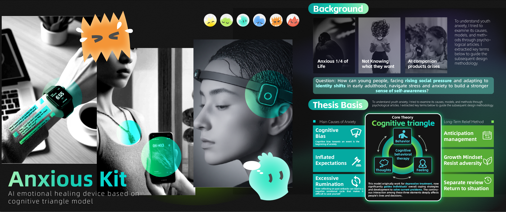
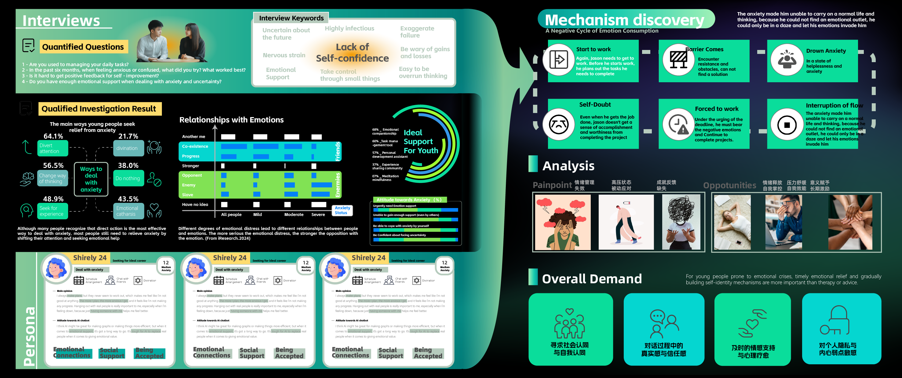
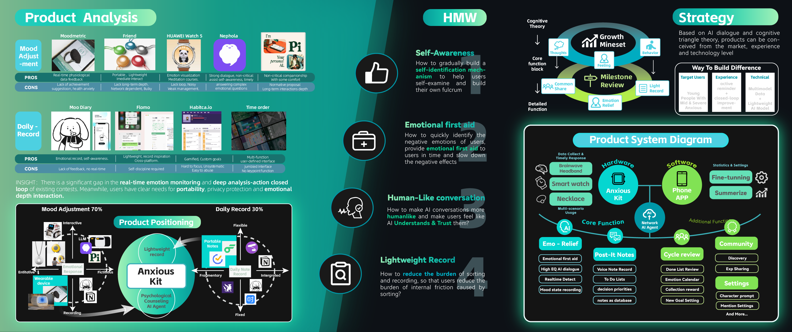
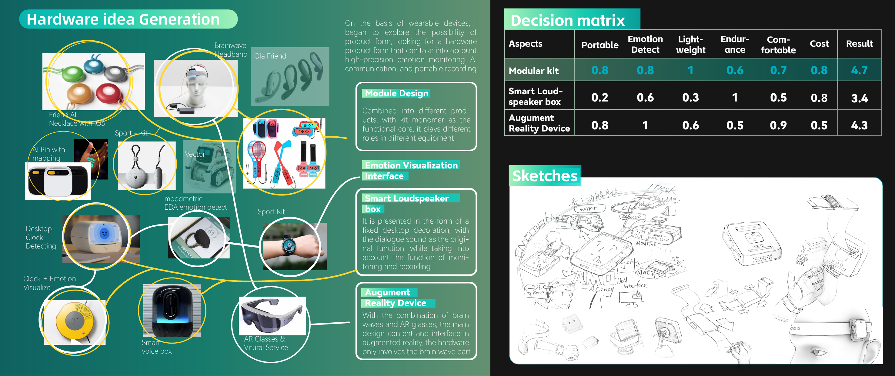
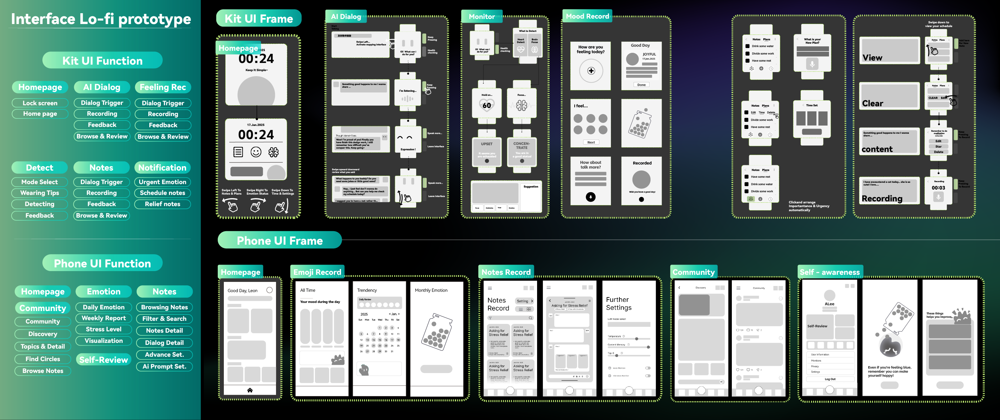
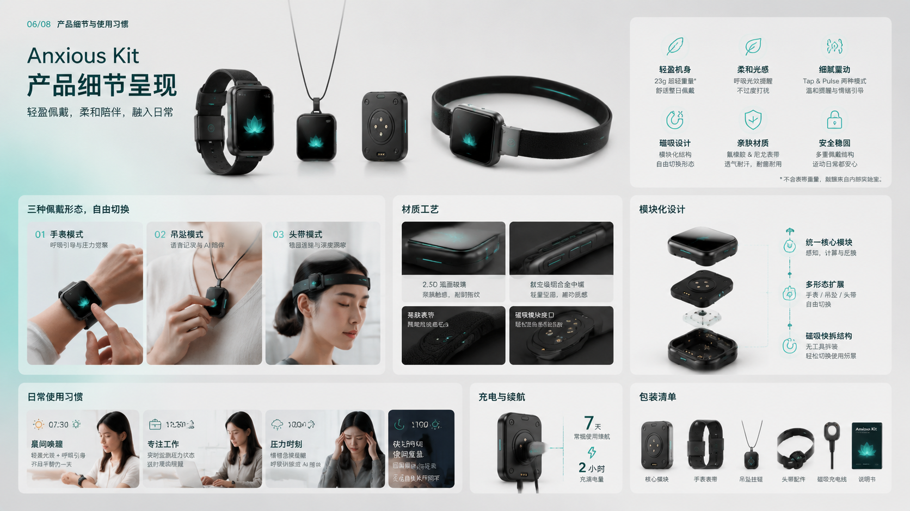
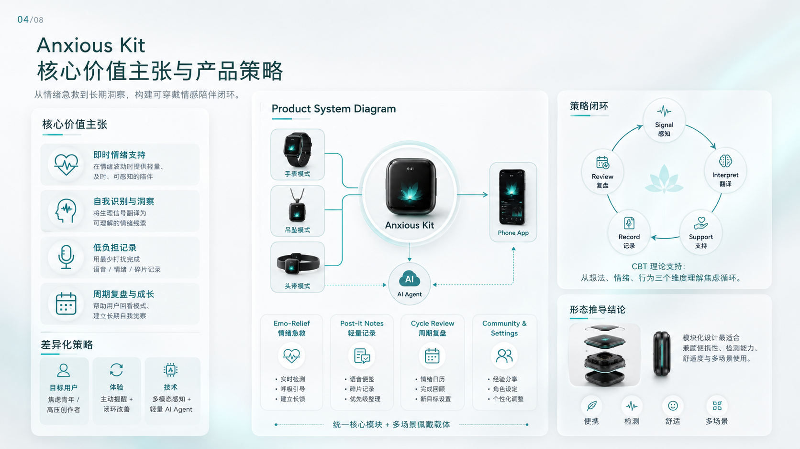
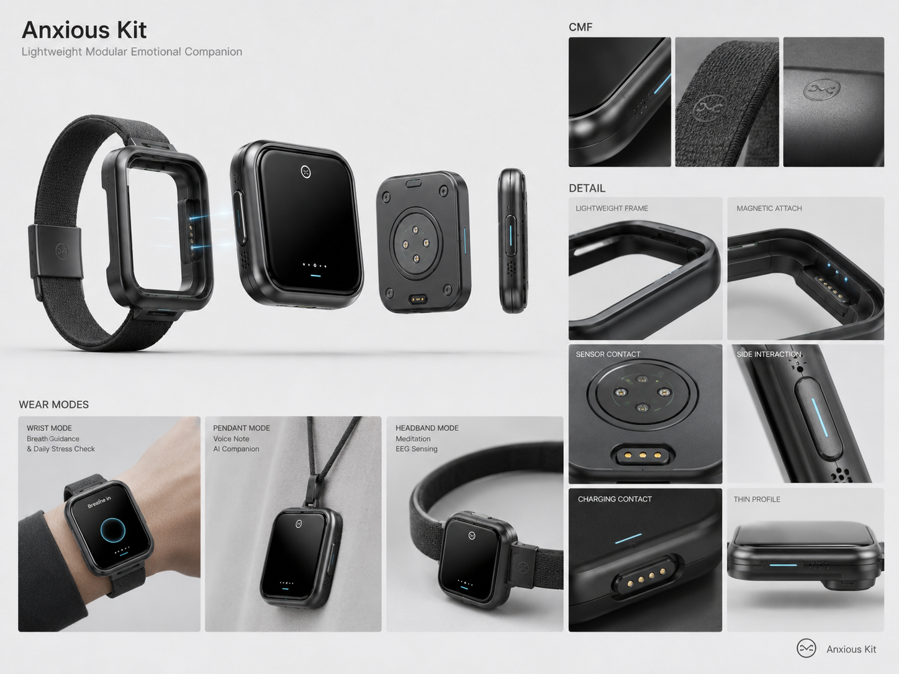
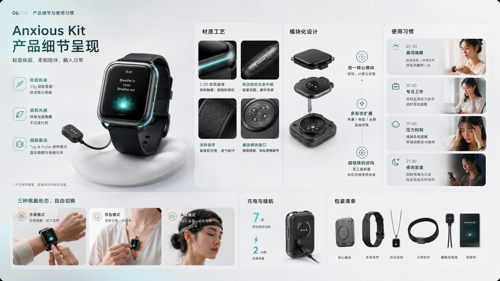
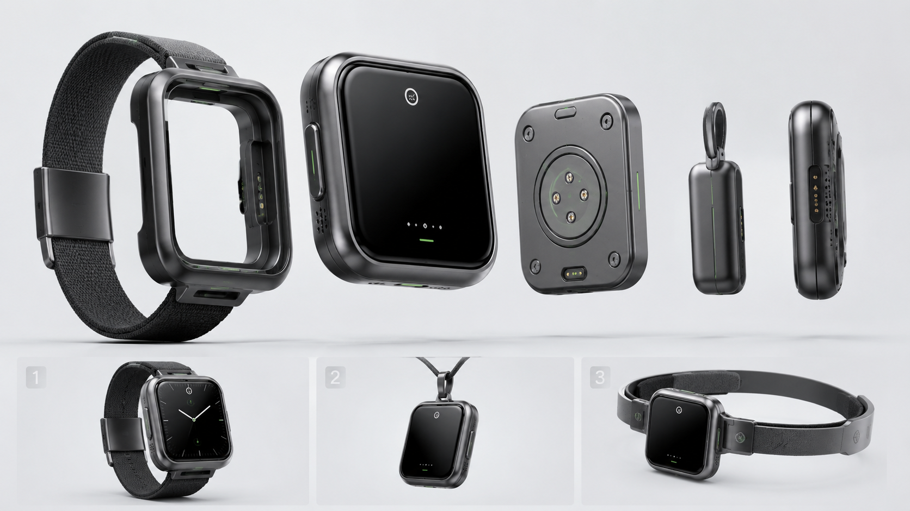

Anxious Kit
辅助自我觉察的便携笔记 + 情绪监测装置
背景与问题
在快节奏的高压日常中，人们往往难以实时察觉并记录自己的负面情绪。Anxious Kit 是一款可穿戴情绪辅助系统，旨在通过生理信号监测与 AI Agent 的即时干预，帮助用户完成从“情绪采样”到“长期管理”的闭环。
核心挑战：如何在不增加用户认知负担的前提下，实现高频、准确的情绪记录与反馈？

Anxious Kit 产品视觉概览
设计方案
项目采用了“传感器监测 + 交互式标记”的双重机制。当传感器捕捉到异常生理信号（如心率波动）时，AI Agent 会通过微弱的物理震动或语音提醒用户，引导其进行简单的点击标记或短语音录入。
通过这种“低负担采样”模式，系统能够积累大量的用户情绪数据，并生成个性化的情绪趋势报告。AI Agent 会根据长期数据提供心理建议，帮助用户识别焦虑诱因并建立应对机制。

AI Agent 驱动的情绪反馈闭环

硬件交互细节与传感器布局
原型与验证
在原型开发阶段，我重点验证了反馈机制的灵敏度与用户接受度。通过多次迭代，优化了提醒的频率与强度，确保系统既能起到警示作用，又不会成为新的干扰源。

低保真原型测试与反馈收集
视觉资产
项目的视觉表现力与排版研究。包含前期的情绪看板、设计规范以及最终的高保真渲染图。






